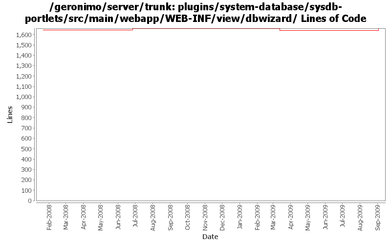

[root]/plugins/system-database/sysdb-portlets/src/main/webapp/WEB-INF/view/dbwizard

| Author | Changes | Lines of Code | Lines per Change |
|---|---|---|---|
| Totals | 45 (100.0%) | 203 (100.0%) | 4.5 |
| xuhaihong | 10 (22.2%) | 113 (55.7%) | 11.3 |
| dwoods | 15 (33.3%) | 65 (32.0%) | 4.3 |
| linsun | 16 (35.6%) | 17 (8.4%) | 1.0 |
| gawor | 2 (4.4%) | 8 (3.9%) | 4.0 |
| jaydm | 2 (4.4%) | 0 (0.0%) | 0.0 |
GERONIMO-4835 Can not import datasource from JBOSS4
31 lines of code changed in 1 file:
GERONIMO-4640 import link from the Jboss and Weblogic server in Database Pools portlet does not work. Thanks Shawn Jiang for the patch.
2 lines of code changed in 1 file:
GERONIMO-4517 Apply unified message display style(G-4484) to javascript alert messages. Together with the localization of these messages. Thanks for the patch, Gang Yin
80 lines of code changed in 8 files:
ensure username and password fields always appear next to each other so that web browsers don't autofill the wrong field. Based on patch from Ivan (GERONIMO-4561)
8 lines of code changed in 2 files:
cleanup old forms that are not using the post method - part 2 (see Rev735155 for part 1)
1 lines of code changed in 1 file:
GERONIMO-4025 applied GERONIMO-4025-DB-style.patch from Rex Wang.
1 lines of code changed in 1 file:
GERONIMO-4474 Pull out the text in the JSP files to resource bundle files. Patches provided by Gang Yin.
0 lines of code changed in 2 files:
GERONIMO-4317 - SQL jdbc driver class name is wrong in db pool creation wizard
1 lines of code changed in 1 file:
GERONIMO-4081 Accessibility issue: Webking scan errors against 'Check Web Accessibility(Section 508)'
63 lines of code changed in 9 files:
GERONIMO-4025 - Accessibility issues. Rex, thanks for the patch and keep them coming.
0 lines of code changed in 2 files:
GERONIMO-3503 DBPool wizzard creates plans only for local-transactions - Patch from Manu George - thanks!
16 lines of code changed in 15 files:
Properly open the fmt:message tag
0 lines of code changed in 2 files: